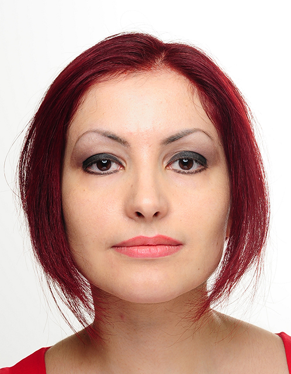

Currently, I am a member of the Scientific Staff at Schloss Dagstuhl – Leibniz Center for Informatics . As a researcher, I am also associated with Max-Planck Institute for Informatics. Previously I was a Senior Research Scientist at the Chair for Computer Graphics and Multimedia Systems of the University of Siegen, Germany. And before that I held a position as an associated professor at the Faculty of Computer Science and Media Technology in Gjovik University College (Høgskolen i Gjøvik- now Norwegian University of Science and Technology) and a member of the Norwegian Colour and Visual Computing Laboratory. In 2013, I've received my PhD title at the Computer Vision Center (CVC) of the Universitat Autònoma de Barcelona (UAB) , Barcelona, Spain. Before that, I've obtained my master degree in Artificial Intelligence and Computer Vision in 2008 from UAB. Specialties: Computer Vision and Pattern Recognition, Inverse Rendering, Light field, Color Vision, Time-of-Flight, Computational Photography, Multimodal Imaging and Sensor Fusion, Psychophysics and Perception.
My complete research CV can be accessed here.

Schloss Dagstuhl
Universität des Saarlandes
Campus E1 1
66123 Saarbrücken
Germany